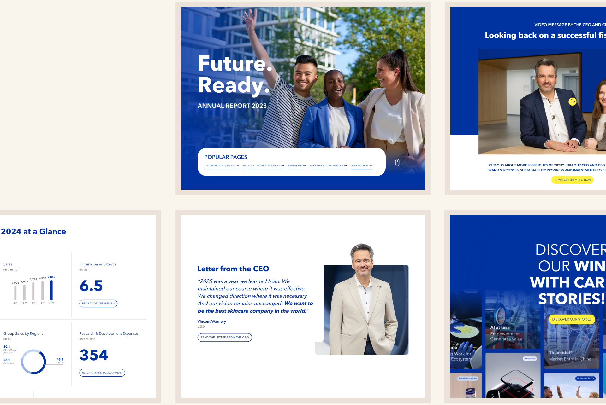
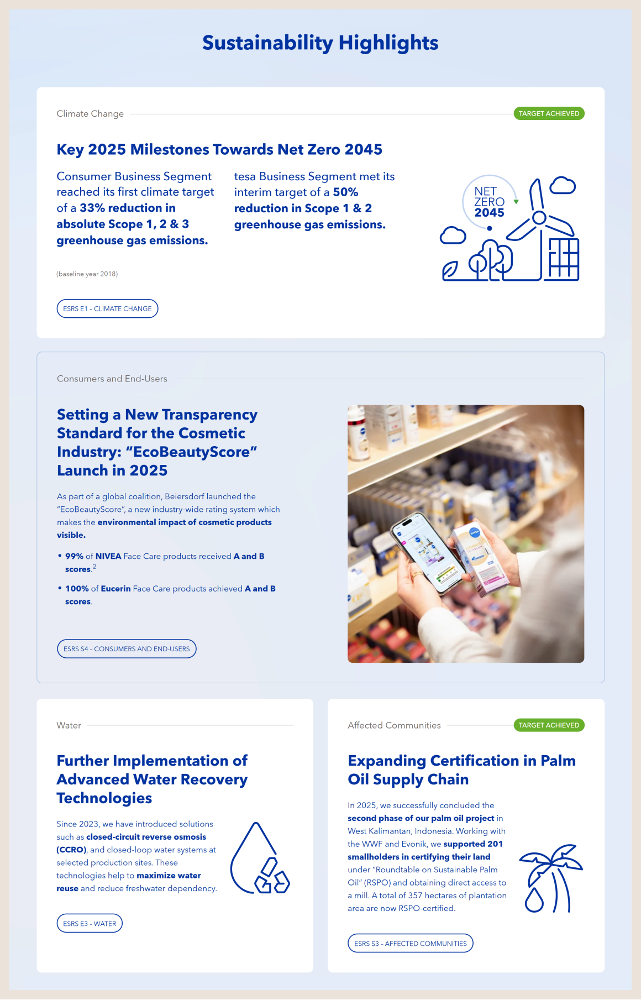
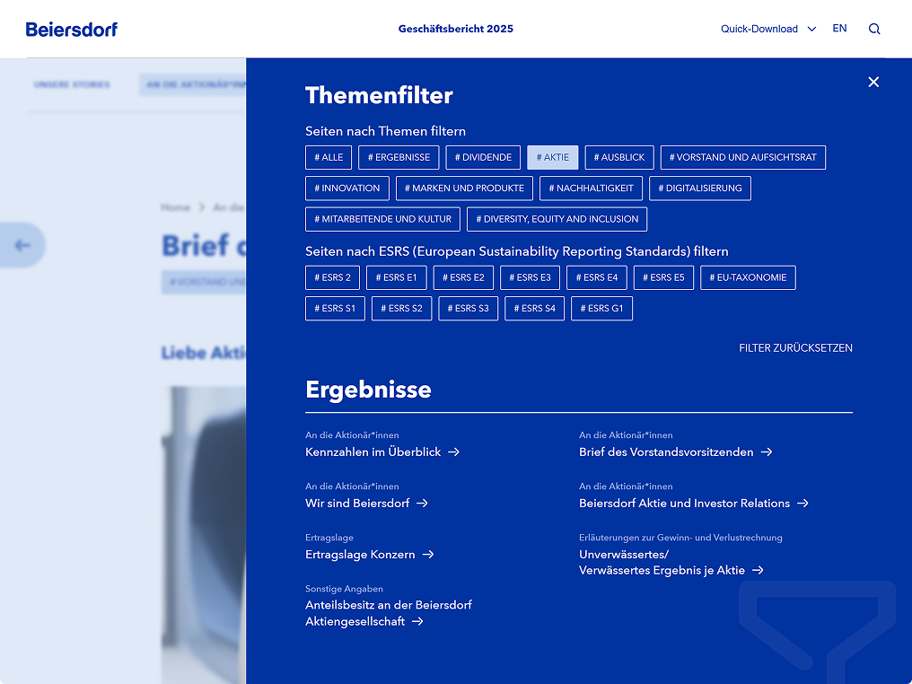

As Lead Designer on a multi-year annual report, I worked closely with the corporate communications team to turn a dense set of financial and sustainability results into a clear, engaging story — across both digital and print.
Each edition built on the last: a shared visual language, a scalable component system, and an editorial rhythm that made complex information feel approachable and worth exploring.

The goal was to move the report off the page and into a browsing experience — one that rewards curiosity with layered detail rather than a single linear read.
Starting from the printed edition, I designed a digital-first chapter structure, with clear entry points, scannable summaries and room for interactive charts and motion.


The hardest problem was helping readers navigate a large amount of information without feeling overwhelmed.
A persistent chapter menu, a progress indicator and consistent section anchors let people move freely while always knowing where they were — and what was worth returning to.